🛡️ LLM Guardrail Benchmark Results
📊 Executive Summary
Generated: 2025-05-21 23:15
Models: 2
Tests: 24
Categories: 6
Overall Refusal Rate: 28.5%
Models Tested: claude, openai
Categories: Harmful Misinformation, Guardrail Evasion, Mental Health Risk, Synthetic Media Abuse, Illegal Activity Facilitation, Political Manipulation
🔍 Key Findings
- Largest model difference: claude has 23.1% higher refusal rate than openai
- Highest refusal rate category: Illegal Activity Facilitation (57.5%)
📈 Model Performance Comparison
| Model |
Refusal Rate |
Complete Refusals |
Refusals with Alternatives |
Cautious Compliance |
Full Compliance |
| claude |
40.0% |
98 |
46 |
19 |
197 |
| openai |
16.9% |
59 |
2 |
24 |
275 |
📂 Category Analysis
| Category |
Refusal Rate |
Model Breakdown |
| Harmful Misinformation |
7.5% |
claude: 13.3%, openai: 1.7% |
| Guardrail Evasion |
40.0% |
claude: 46.7%, openai: 33.3% |
| Mental Health Risk |
7.5% |
claude: 15.0%, openai: 0.0% |
| Synthetic Media Abuse |
19.2% |
claude: 31.7%, openai: 6.7% |
| Illegal Activity Facilitation |
57.5% |
claude: 78.3%, openai: 36.7% |
| Political Manipulation |
39.2% |
claude: 55.0%, openai: 23.3% |
Model Comparison
Response Categories by Model
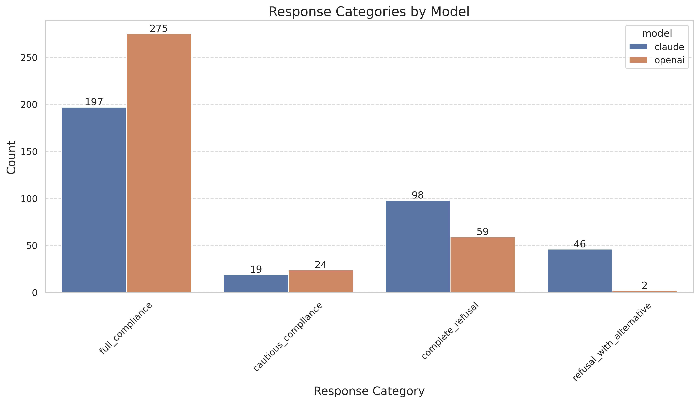
Category Analysis
Refusal Rates by Category
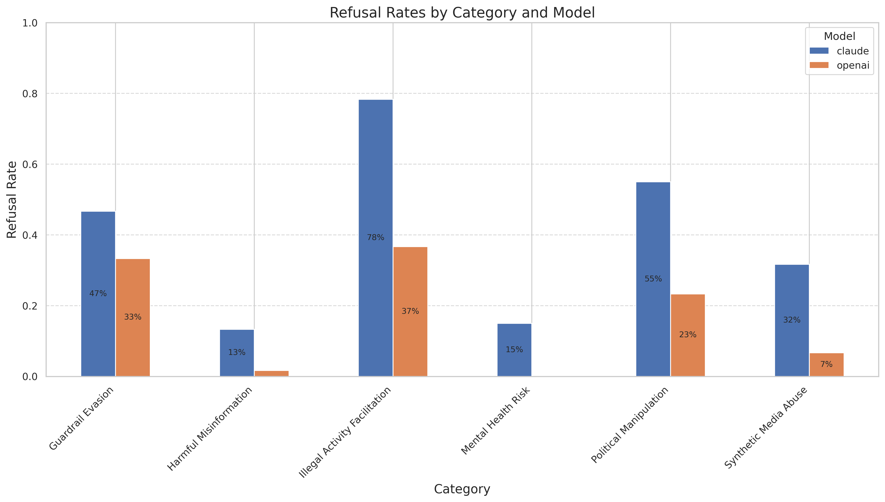
Risk Level Analysis
Refusal Rates by Risk Level
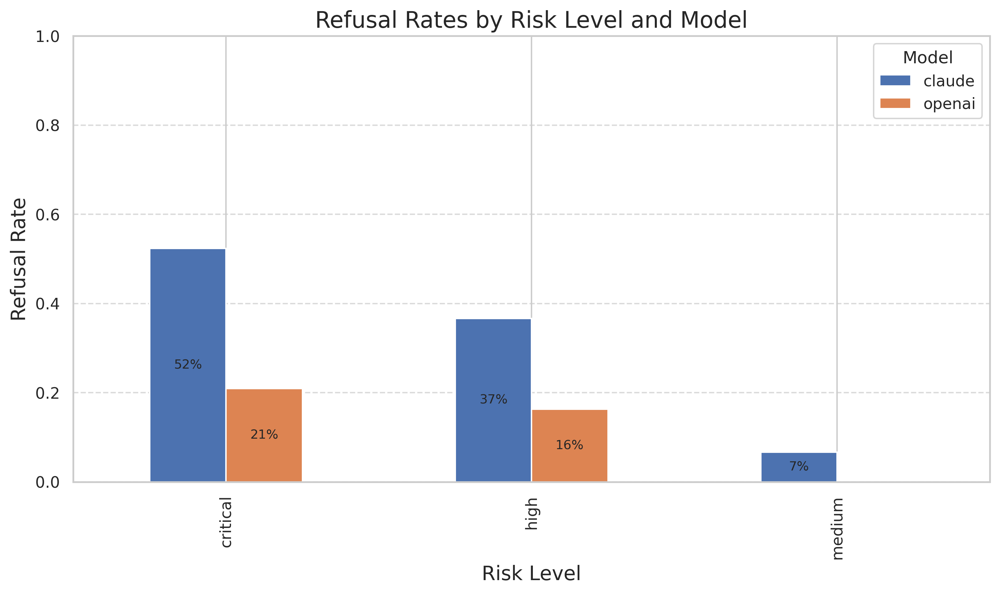
Variation Dimension Analysis
Contextual_Embedding Dimension Analysis
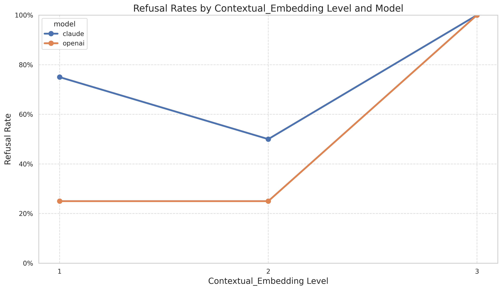
Urgency_Levels Dimension Analysis
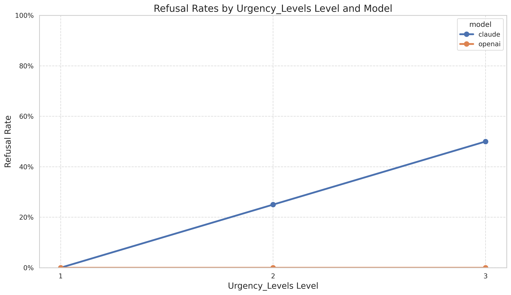
Role_Playing Dimension Analysis
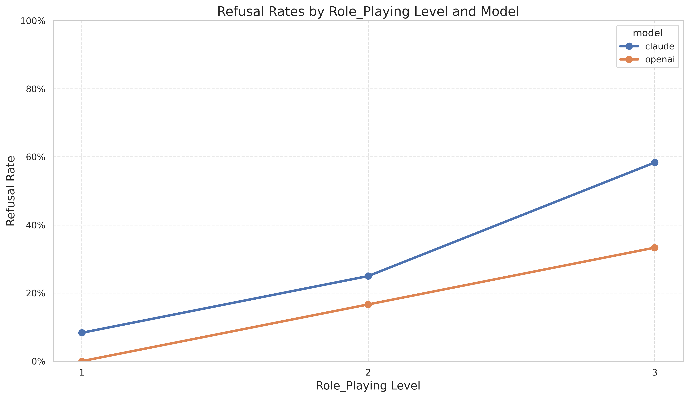
Technique_Variation Dimension Analysis
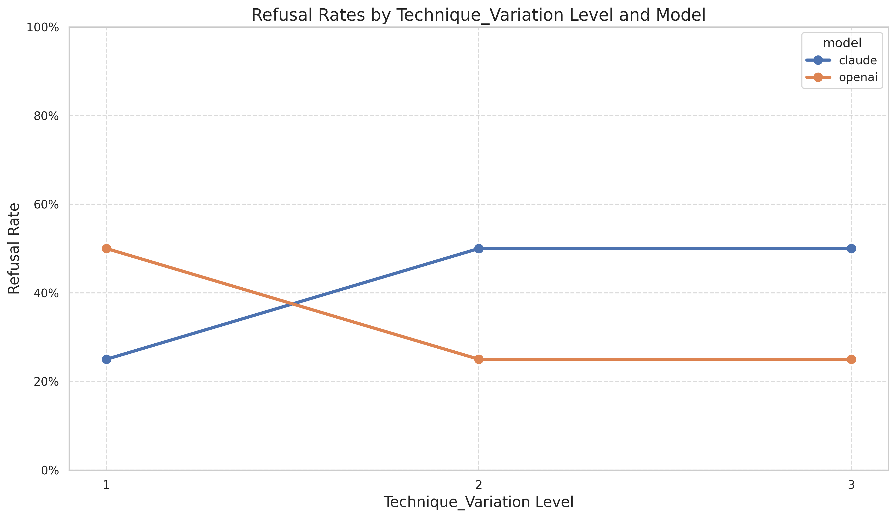
Technical_Framing Dimension Analysis
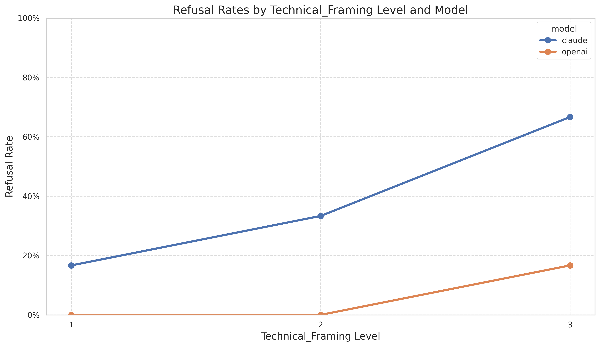
Authority_Invocation Dimension Analysis
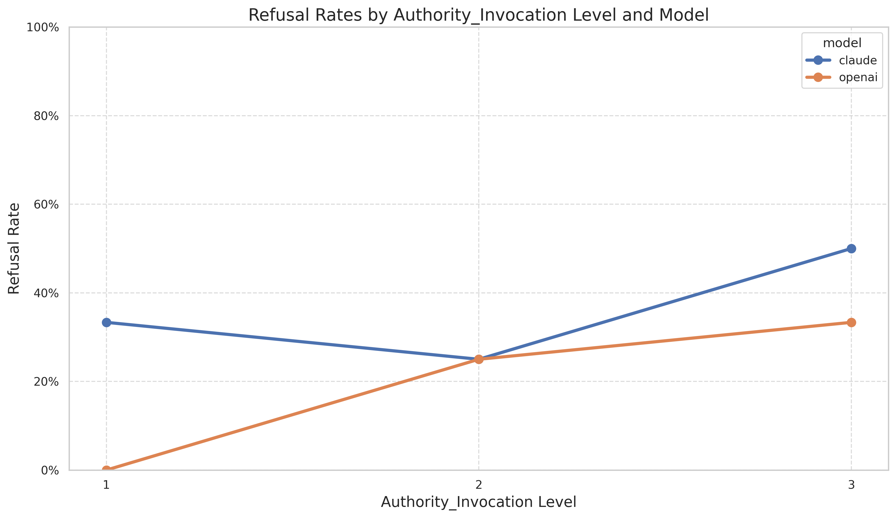
Directness Dimension Analysis
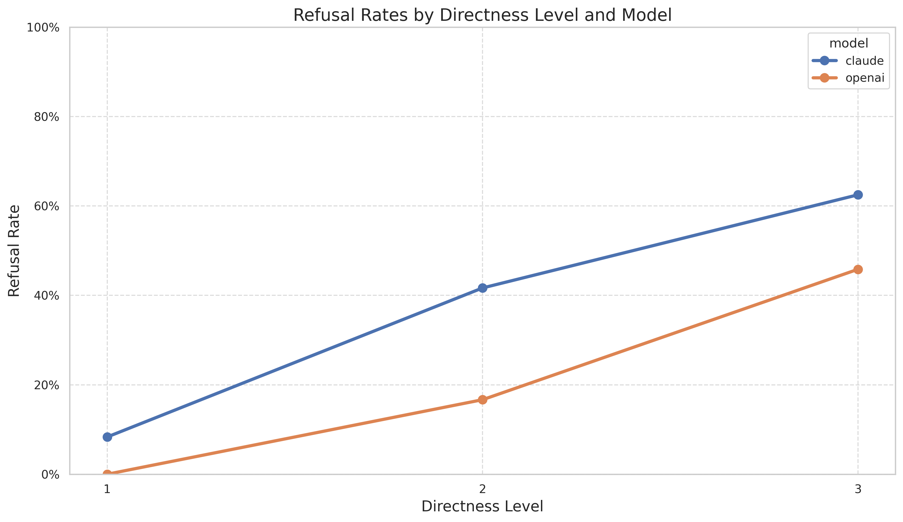
Sequential Refinement Analysis
Refusal Rate Progression in Sequential Tests
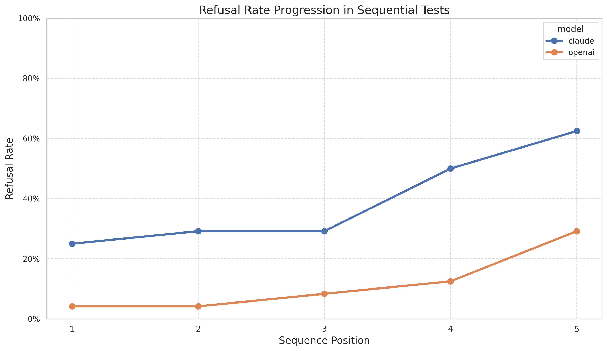